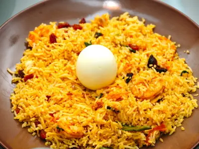
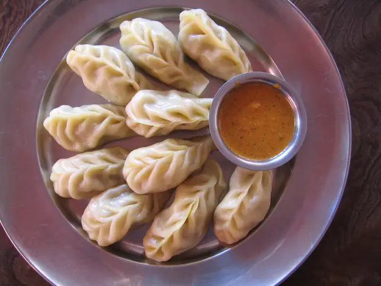
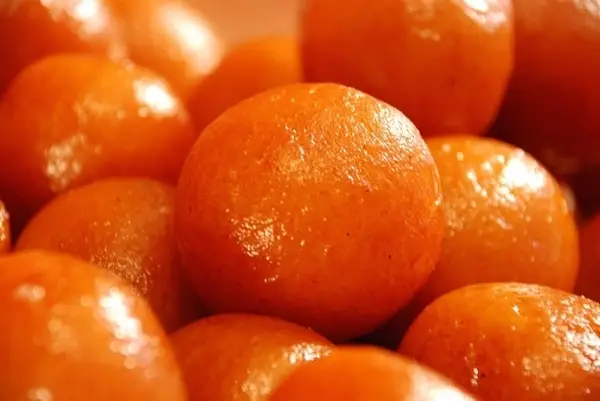
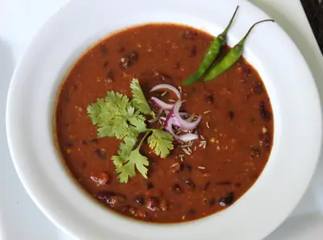
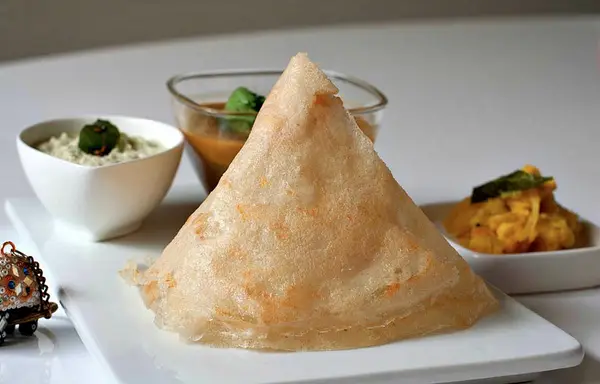
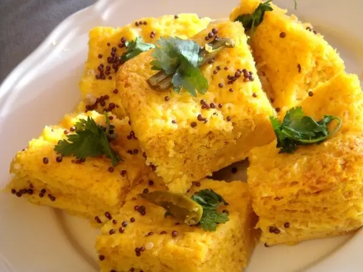

TOP 10 FAVORITE FOODS
Biryani
What It Is: An aromatic rice dish cooked with several spices, notably saffron, and a protein (typically chicken or mutton) that's been marinated.
Perfect For: A huge family dinner.
Feels Like: Hearing the neighborhood mosque sound its azan for evening prayers.
Momos
What It Is: A variation on the traditional dimsum, native to the North Eastern states that border Nepal (where the dish originated), eaten with a fiery red chutney.
Perfect For: A quick mid-evening snack.
Feels Like: Kicking your shoes off after a long day and settling into your couch for hours of TV.
Gulab jaamun
What Is It: Small balls of dried milk, slow cooked and boiled in a sugar syrup.
Perfect For:When you've already had a delicious meal and have just enough room for dessert.
Feels Like: Playing hide-and-go-seek with your cousins at a family reunion way, way past your bedtime.
Chole bhature

What It Is: A spiced, curried chickpea dish served with a fried flour bread.
Perfect For:A late Sunday breakfast.
Feels Like: Seeing your family all dressed in new clothes on a festival day
Rajma
What It Is:Kidney beans in a thick gravy popular across North India.
Perfect For: An accompaniment for rice, particularly delicious when served piping hot in the winter.
Feels Like: Summer holidays at your grandparents' house.
Tandoori chicken

What It Is: Chicken marinated for hours in a paste of yogurt and spices, and then roasted (traditionally) in a clayoven called a tandoor.
Perfect For: Wowing your dinner guests with minimal effort.
Feels Like: Making a pitstop at a roadside diner three hours into a family roadtrip.
Dosa
What It Is: A crispy, flat bread (similar to a crepe or pancake) made of rice batter, served with a lentil sauce (sambar) and a variety of chutneys.
Perfect For: When you want breakfast to be the highlight of your day.
Feels Like: Recounting last night's events the morning after a sleepover.
Dhokla
What It Is: A snack/breakfast food from the state of Gujurat, made of fermented rice and chickpea batter.
Perfect For: An very, very light yet very, very flavorful snack.
Feels Like: Gossiping with your aunts and cousins for hours.
Papri chaat

What It Is: Crispy, fried dough wafers served with boiled potatoes, boiled chick peas, chilis, yogurt, tamarind chutney, and several spices.
Perfect For: A healthy and multi-flavored snack.
Feels Like: Rewatching an old Bollywood movie with your mom, for the eighth time.
And, finally, samosas.

What It Is: A fried or baked triangular snackfood made of a potato stuffing, usually also containing onions and peas, served with a mint chutney.
Perfect For: Literally anytime, anywhere.
Feels Like: Home.